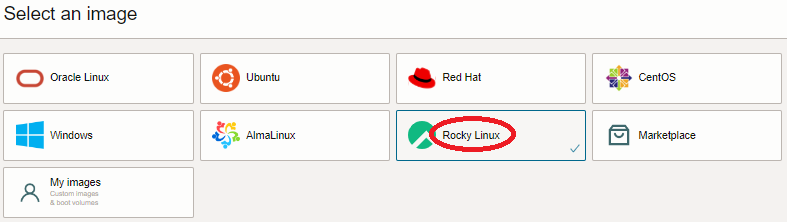

クラスタ・ネットワーク に接続するインスタンスは、接続に必要なソフトウェアがインストールされている必要があり、これらを含んだOSイメージが クラスタネットワーキングイメージ として マーケットプレース から提供されていますが、これらのベースとなるOSは、Oracle Linuxのみです。
本テクニカルTipsは、 BM.Optimized3.36 を使用するインスタンスをOracle Linux以外のOSでクラスタ・ネットワークに接続する方法を解説します。
注意 : テクニカルTips内の画面ショットは、現在のOCIコンソール画面と異なっている場合があります。
0. 概要
クラスタ・ネットワーク に接続するインスタンスは、以下の条件を満たす必要があります。
- クラスタ・ネットワーク対応シェイプ（※1）を使用している
- 同一のクラスタ・ネットワークと共にデプロイしている
- クラスタ・ネットワーク接続のための以下ソフトウェアがインストールされている
- Mellanox OFED
- wpa_supplicant（※2）
- oci-cn-auth（※3）
- クラスタ・ネットワーク接続用ネットワークインターフェースがOS上に構築されている
※1）クラスタ・ネットワーク対応シェイプは、以下に記載があります。
https://docs.public.oneportal.content.oci.oraclecloud.com/ja-jp/iaas/Content/Compute/Tasks/managingclusternetworks.htm#supported-shapes
※2）クラスタ・ネットワークは、インスタンスが接続する際802.1X認証を要求しますが、これらの処理を行うクライアントソフトウェアがwpa_supplicantです。802.1X認証の仕組みは、以下のサイトが参考になります。
https://www.infraexpert.com/study/wireless14.html
※3）クラスタ・ネットワークに接続する際の802.1X認証で必要な認証処理機能を提供するユーティリティーソフトウェアで、GitHubから公開されています。
これらの条件の中で、クラスタ・ネットワーク接続のためのソフトウェアは、ベースOSにOracle Linuxを使用する クラスタネットワーキングイメージ には予めインストールされていますが、OSによってはこれらのソフトウェアをインストールすることにより、クラスタ・ネットワークに接続することが可能です。
これらソフトウェアのインストールは、手順が多く相応の所要時間が必要なため、予め最小ノード（2ノード）のクラスタを構築してこの計算ノードにソフトウェアをインストール、この計算ノードの カスタム・イメージ を使用して、実際に使用するHPCクラスタを構築します。
以上より、クラスタ・ネットワーク非対応OSイメージを使ったHPCクラスタの構築は、以下の手順を経て行います。
- カスタムイメージ取得用2ノードHPCクラスタ構築
- クラスタ・ネットワーク接続用ソフトウェアインストール
- クラスタ・ネットワーク接続確認
- カスタム・イメージ取得
- cloud-init 設定ファイル（cloud-config）作成
- カスタム・イメージとcloud-configを指定した インスタンス構成 作成
- インスタンス構成を指定した クラスタ・ネットワーク 作成
以降は、Rocky Linux 9.1とCentOS 7.9を例に、これらのOSを使用するBM.Optimized3.36インスタンスをクラスタ・ネットワークに接続する方法を解説します。
1. カスタム・イメージ取得用2ノードHPCクラスタ構築
本章は、 クラスタ・ネットワーク に接続するためのソフトウェアをインストールした カスタム・イメージ を取得するため、2ノードのHPCクラスタを構築します。
このHPCクラスタは、 OCI HPCチュートリアル集 の HPCクラスタを構築する(基礎インフラ手動構築編) を活用し、このチュートリアルの以下の章を実施することで、その構築を行います。
この際、上記チュートリアルに対して、以下の点を変更して実施します。
-
cloud-config適用除外
1-1. cloud-config作成 で作成しているcloud-configは、その処理内容をカスタム・イメージ取得用の計算ノードに適用する必要が無いため、作成しません。
またこれに伴い、後の 1-2. インスタンス構成作成 の 3.7 管理フィールド で指定しているcloud-configの適用も、実施しません。 -
イメージ変更
1-2. インスタンス構成作成 の 3.4 イメージとシェイプ フィールド で指定するイメージは、 使用するOSがRocky Linux 9.1かCentOS 7.9かに合わせて、以下を指定します。
- イメージ ：Rocky Linux 9.1 - Free(x86_64) (イメージの変更 ボタンをクリックして表示される以下 イメージの選択 サイドバーで Rocky Linux を選択し表示される Rocky Linux 9.1 - Free(x86_64) を選択して表示される イメージ・ビルド フィールドで 9.1.2 を選択し イメージの選択 ボタンをクリック）

- イメージ ：CentOS 7 (イメージの変更 ボタンをクリックして表示される以下 イメージの選択 サイドバーで CentOS を選択し表示される CentOS 7 を選択して表示される イメージ・ビルド フィールドで 2023.04.20-0 を選択し イメージの選択 ボタンをクリック）

2. クラスタ・ネットワーク接続用ソフトウェアインストール
2-0. 概要
本章は、 クラスタ・ネットワーク に接続するためのソフトウェアのインストールを、Rocky Linux 9.1とCentOS 7.9に分けて解説します。
以下は、その手順概要です。
- カスタム・イメージ取得用計算ノードへのログインと事前準備
- Mellanox OFEDダウンロード・インストール
- wpa_supplicant・oci-cn-authインストール
なお本章の作業は、最終的にMPIの稼働確認を行う必要から、2台の計算ノードの何れにも実施します。
2-1. Rocky Linux 9.1の場合
2-1-1. カスタム・イメージ取得用計算ノードへのログインと事前準備
本章は、 カスタム・イメージ 取得用計算ノードにログインし、以降の作業に必要な事前準備として以下の作業を行います。
- SELinux無効化
- インスタンス名による名前解決設定適用
計算ノードへのログインは、 2-1. 計算ノードログイン の手順に従い実施しますが、この際Rocky Linuxのインストール時に作成されるログインユーザが rocky であることを考慮し、以下のようにBastionノードからrockyユーザでSSHログインします。
> ssh rocky@inst-wyr6m-comp
The authenticity of host 'inst-wyr6m-comp (10.0.1.61)' cant be established.
ECDSA key fingerprint is SHA256:z1Hqcm+vNKQLCvqL6t1fqCgqpqo+onshYP7tI1AcwYU.
ECDSA key fingerprint is MD5:0a:86:6f:d3:86:36:d0:7d:74:3e:8c:3f:cd:4c:3a:68.
Are you sure you want to continue connecting (yes/no)? yes
Warning: Permanently added 'inst-wyr6m-comp,10.0.1.61' (ECDSA) to the list of known hosts.
次に、SELinuxを無効化するため、以下コマンドを計算ノードのrockyユーザで実行します。
> sudo setenforce 0
> sudo sed -i 's/SELINUX=enforcing/SELINUX=disabled/g' /etc/selinux/config
次に、以降作成する計算ノードの名前解決をインスタンス名で行うため、 OCI HPCテクニカルTips集 の 計算ノードの効果的な名前解決方法 の手順をBastionノードの代わりに計算ノードに対して実施します。
2-1-2. Mellanox OFEDダウンロード・インストール
本章は、Mellanox OFEDをNVIDIAのウェブサイトからダウンロードし、これをインストールします。
Mellanox OFEDのダウンロードは、以下のサイトから行います。
https://network.nvidia.com/products/infiniband-drivers/linux/mlnx_ofed/
この際、以下のメニューを選択し、ISOイメージ MLNX_OFED_LINUX-5.9-0.5.6.0-rhel9.1-x86_64.iso を入手し、このファイルを計算ノードのrockyユーザのホームディレクトリ直下にコピーします。

次に、Mellanox OFEDをインストールするため、以下コマンドを計算ノードのrockyユーザで実行します。
> sudo dnf install -y perl lsof tcsh gcc-gfortran tk pciutils tcl
> sudo mkdir /mnt/iso; sudo mount -o ro,loop ~/MLNX_OFED_LINUX-5.9-0.5.6.0-rhel9.1-x86_64.iso /mnt/iso
> cd /mnt/iso; sudo ./mlnxofedinstall --without-fw-update -q
次に、インストールしたMellanox OFEDを有効化するため、OSを再起動します。
2-1-3. wpa_supplicant・oci-cn-authインストール
wpa_supplicantとoci-cn-authをインストールするため、以下コマンドを計算ノードのrockyユーザで実行します。
> sudo dnf install -y wpa_supplicant ruby rpm-build python3-psutil git
> sudo gem install fpm
> git clone https://github.com/MarcinZablocki/oci-cn-auth
> cd oci-cn-auth; make
> sudo rpm -ivh ./oci-cn-auth-0.2.11-4.el8.noarch.rpm
2-2. CentOS 7.9の場合
2-2-1. カスタム・イメージ取得用計算ノードへのログインと事前準備
本章は、 カスタム・イメージ 取得用計算ノードにログインし、以降の作業に必要な事前準備として以下の作業を行います。
- firewalld停止
- SELinux無効化
計算ノードへのログインは、 2-1. 計算ノードログイン の手順に従い実施します。
次に、firewalldを停止するため、以下コマンドを計算ノードのopcユーザで実行します。
> sudo systemctl disable --now firewalld
次に、SELinuxを無効化するため、以下コマンドを計算ノードのopcユーザで実行します。
> sudo setenforce 0
> sudo sed -i 's/SELINUX=enforcing/SELINUX=disabled/g' /etc/selinux/config
2-2-2. Mellanox OFEDダウンロード・インストール
本章は、Mellanox OFEDをNVIDIAのウェブサイトからダウンロードし、これをインストールします。
Mellanox OFEDのダウンロードは、以下のサイトから行います。
https://network.nvidia.com/products/infiniband-drivers/linux/mlnx_ofed/
この際、以下のメニューを選択し、ISOイメージ MLNX_OFED_LINUX-5.4-3.6.8.1-rhel7.9-x86_64.iso を入手し、このファイルを計算ノードのopcユーザのホームディレクトリ直下にコピーします。

次に、Mellanox OFEDをインストールするため、以下コマンドを計算ノードのopcユーザで実行します。
> sudo yum install -y python-devel kernel-devel-`uname -r` redhat-rpm-config createrepo rpm-build tcl gcc-gfortran tk automake libtool autoconf fuse-libs
> sudo mkdir /mnt/iso; sudo mount -o ro,loop ~/MLNX_OFED_LINUX-5.4-3.6.8.1-rhel7.9-x86_64.iso /mnt/iso
> cd /mnt/iso; sudo ./mlnxofedinstall --add-kernel-support --without-fw-update -q
> sudo dracut -f
次に、インストールしたMellanox OFEDを有効化するため、OSを再起動します。
2-2-3. wpa_supplicant・oci-cn-authインストール
wpa_supplicantとoci-cn-authをインストールするため、以下コマンドを計算ノードのopcユーザで実行します。
> sudo yum install -y centos-release-scl
> sudo yum install -y git rh-ruby30 rpm-build python36-pyOpenSSL python36-psutil python36-jinja2 python36-requests python36-cryptography
> scl enable rh-ruby30 bash
> gem install fpm
> git clone https://github.com/MarcinZablocki/oci-cn-auth
> cd oci-cn-auth; make
> sudo rpm -ivh ./oci-cn-auth-0.2.11-4.el7.noarch.rpm
3. クラスタ・ネットワーク接続・確認
3-0. 概要
本章は、計算ノードの クラスタ・ネットワーク への接続に必要な設定を行い、Mellanox OFEDに含まれるOpenMPIとIntel MPI Benchmarkを使用してその性能を確認します。 以下は、その手順概要です。
- クラスタ・ネットワーク接続用ネットワークインターフェース作成
- Intel MPI Benchmark実行
なお、ネットワークインターフェース作成は、Rocky Linux 9.1とCentOS 7.9で手順が異なるため、それぞれに分けて解説します。
3-1. クラスタ・ネットワーク接続用ネットワークインターフェース作成
3-1-1. Rocky Linux 9.1の場合
本章は、 クラスタ・ネットワーク 接続用のネットワークインターフェースを作成し、クラスタ・ネットワークへの接続を確認します。
この作業は、2台の計算ノードの何れにも実施します。
クラスタ・ネットワーク接続用のネットワークインターフェースを作成するため、以下のスクリプトを計算ノードのrockyユーザのホームディレクトリに作成し実行権を与えます。
[oci-rdma-configure-rh9.sh]
#!/bin/bash
nmcli connection add con-name cluster-network ifname eth2 type ethernet
nmcli connection modify cluster-network ipv4.addresses 192.168.0.`ip a s dev eth0 | grep 'inet ' | awk '{print $2}' | awk -F/ '{print $1}' | awk -F. '{print $4}'`/24
nmcli connection modify cluster-network ipv4.method manual
nmcli connection up cluster-network
次に、以下コマンドを計算ノードのrockyユーザで実行します。
> sudo ~/oci-rdma-configure-rh9.sh
> sudo systemctl enable --now oci-cn-auth.timer
次に、802.1X認証が通ったことを確認するため、以下コマンドを計算ノードのrockyユーザで実行し、その出力を確認します。
> sudo wpa_cli status | grep state
wpa_state=COMPLETED
Supplicant PAE state=AUTHENTICATED
EAP state=SUCCESS
3-1-2. CentOS 7.9の場合
本章は、 クラスタ・ネットワーク 接続用のネットワークインターフェースを作成し、クラスタ・ネットワークへの接続を確認します。
この作業は、2台の計算ノードの何れにも実施します。
クラスタ・ネットワーク接続用のネットワークインターフェースを作成するため、以下のスクリプトを作成して実行権を与えます。
[oci-rdma-configure-rh7.sh]
#!/bin/bash
echo "TYPE=\"Ethernet\"" > /etc/sysconfig/network-scripts/ifcfg-ens800f0
echo "BOOTPROTO=\"none\"" >> /etc/sysconfig/network-scripts/ifcfg-ens800f0
echo "IPADDR=192.168.0.`ifconfig ens300f0 | grep "inet " | awk '{print $2}' | awk -F. '{print $4}'`" >> /etc/sysconfig/network-scripts/ifcfg-ens800f0
echo "NETMASK=255.255.255.0" >> /etc/sysconfig/network-scripts/ifcfg-ens800f0
echo "DEFROUTE=\"no\"" >> /etc/sysconfig/network-scripts/ifcfg-ens800f0
echo "PEERDNS=\"no\"" >> /etc/sysconfig/network-scripts/ifcfg-ens800f0
echo "PEERROUTES=\"no\"" >> /etc/sysconfig/network-scripts/ifcfg-ens800f0
echo "IPV4_FAILURE_FATAL=\"no\"" >> /etc/sysconfig/network-scripts/ifcfg-ens800f0
echo "IPV6INIT=\"no\"" >> /etc/sysconfig/network-scripts/ifcfg-ens800f0
echo "IPV6_FAILURE_FATAL=\"no\"" >> /etc/sysconfig/network-scripts/ifcfg-ens800f0
echo "NAME=\"System ens800f0\"" >> /etc/sysconfig/network-scripts/ifcfg-ens800f0
echo "DEVICE=\"ens800f0\"" >> /etc/sysconfig/network-scripts/ifcfg-ens800f0
echo "ONBOOT=\"yes\"" >> /etc/sysconfig/network-scripts/ifcfg-ens800f0
echo "NM_CONTROLLED=\"no\"" >> /etc/sysconfig/network-scripts/ifcfg-ens800f0
ifup ens800f0
次に、以下コマンドを計算ノードのopcユーザで実行します。
> sudo ./oci-rdma-configure-rh7.sh
次に、802.1X認証が通ったことを確認するため、以下コマンドを計算ノードのopcユーザで実行し、その出力を確認します。
> sudo wpa_cli status | grep state
wpa_state=COMPLETED
Supplicant PAE state=AUTHENTICATED
EAP state=SUCCESS
3-2. Intel MPI Benchmark実行
本章は、 クラスタ・ネットワーク に接続した計算ノードで十分なインターコネクト性能が出ていることを確認するため、 3. MPIプログラム実行（2ノード編） の手順を実行し、結果を確認します。
この際、Rocky Linux 9.1の場合 3-1. 計算ノード間SSH接続環境構築 で実行しているコマンドを以下に置き換えて実行します。
> for hname in `cat hostlist.txt`; do echo $hname; scp -p ~/.ssh/id_rsa rocky@$hname:~/.ssh/; done
> for hname in `cat hostlist.txt`; do echo $hname; scp -p ~/.ssh/known_hosts rocky@$hname:~/.ssh/; done
> for hname in `cat hostlist.txt`; do echo $hname; scp -p ./hostlist.txt rocky@$hname:~/; done
また、Rocky Linux 9.1の場合 3-3. Intel MPI Benchmark Ping-Pong実行 で実行しているコマンドを以下に置き換えて実行します。
> source /usr/mpi/gcc/openmpi-4.1.5rc2/bin/mpivars.sh
> mpirun -n 2 -N 1 -hostfile ./hostlist.txt -x UCX_NET_DEVICES=mlx5_2:1 /usr/mpi/gcc/openmpi-4.1.5rc2/tests/imb/IMB-MPI1 -msglog 3:28 PingPong
4. カスタム・イメージ取得
4-0. 概要
本章は、 カスタム・イメージ 取得用2ノードHPCクラスタの計算ノードのうちどちらか一台で、カスタム・イメージを取得します。 以下は、その手順概要です。
- カスタム・イメージ使用時問題となる設定修正
- カスタム・イメージ取得
4-1. カスタム・イメージ使用時問題となる設定修正
本章は、 カスタム・イメージ を使用してクラスタをデプロイする際に問題となる設定を、カスタム・イメージ取得前に除去します。
ここで問題となる設定は、 クラスタ・ネットワーク 用ネットワークインターフェース設定です。
これは、このインターフェースがカスタム・イメージ取得インスタンス用の静的IPアドレスを含んでいるためで、そのままカスタム・イメージを取得すると、これを使用してデプロイしたインスタンスで全て同じIPアドレスが設定され、クラスタ・ネットワークに接続することが出来ません。
以上より、クラスタ・ネットワーク用ネットワークインターフェース設定を削除します。
この方法は、OSがRocky Linux 9.1かCentOS 7.9かで異なります。
-
Rocky Linux 9.1の場合
以下コマンドを計算ノードのrockyユーザで実行します。
> sudo nmcli connection delete cluster-network -
CentOS 7.9の場合
以下コマンドを計算ノードのopcユーザで実行します。
> sudo rm /etc/sysconfig/network-scripts/ifcfg-ens800f0
4-2. カスタム・イメージ取得
本章は、 カスタム・イメージ 取得用インスタンスでカスタム・イメージを取得します。
カスタム・イメージの取得は、当該インスタンスの以下 インスタンスの詳細 ページで 他のアクション プルダウンメニューから カスタム・イメージの作成 メニューを選択し、

表示される以下画面で 名前 フィールドにカスタム・イメージに付与する名前を指定し、 カスタム・イメージの作成 ボタンをクリックします。

なお、カスタム・イメージ取得中は、当該インスタンスが停止します。
5. cloud-config作成
本章は、実際に利用するHPCクラスタ構築のための cloud-init 設定ファイル（cloud-config）を作成します。
このcloud-configは、以下の目的で使用します。
- NVMeローカルディスクファイルシステム作成
- クラスタ・ネットワーク 接続用ネットワークインターフェース作成
ここで作成するcloud-configは、OSがRocky Linux 9.1かCentOS 7.9かで異なります。
[cloud-config-rh9.txt]
#cloud-config
runcmd:
#
# Mount NVMe local storage
- parted -s /dev/nvme0n1 mklabel gpt
- parted -s /dev/nvme0n1 -- mkpart primary xfs 1 -1
# To ensure partition is really created before mkfs phase
- sleep 60
- mkfs.xfs -L localscratch /dev/nvme0n1p1
- mkdir -p /mnt/localdisk
- echo "LABEL=localscratch /mnt/localdisk/ xfs defaults,noatime 0 0" >> /etc/fstab
- mount /mnt/localdisk
#
# Set up cluster network interface
- nmcli connection add con-name cluster-network ifname eth2 type ethernet
- nmcli connection modify cluster-network ipv4.addresses 192.168.0.`ip a s dev eth0 | grep 'inet ' | awk '{print $2}' | awk -F/ '{print $1}' | awk -F. '{print $4}'`/24
- nmcli connection modify cluster-network ipv4.method manual
- nmcli connection up cluster-network
- systemctl start oci-cn-auth.service
[cloud-config-rh7.txt]
#cloud-config
runcmd:
#
# Mount NVMe local storage
- parted -s /dev/nvme0n1 mklabel gpt
- parted -s /dev/nvme0n1 -- mkpart primary xfs 1 -1
# To ensure partition is really created before mkfs phase
- sleep 60
- mkfs.xfs -L localscratch /dev/nvme0n1p1
- mkdir -p /mnt/localdisk
- echo "LABEL=localscratch /mnt/localdisk/ xfs defaults,noatime 0 0" >> /etc/fstab
- mount /mnt/localdisk
#
# Set up cluster network interface
- echo "TYPE=\"Ethernet\"" > /etc/sysconfig/network-scripts/ifcfg-ens800f0
- echo "BOOTPROTO=\"none\"" >> /etc/sysconfig/network-scripts/ifcfg-ens800f0
- echo "IPADDR=192.168.0.`ifconfig ens300f0 | grep 'inet ' | awk '{print $2}' | awk -F. '{print $4}'`" >> /etc/sysconfig/network-scripts/ifcfg-ens800f0
- echo "NETMASK=255.255.255.0" >> /etc/sysconfig/network-scripts/ifcfg-ens800f0
- echo "DEFROUTE=\"no\"" >> /etc/sysconfig/network-scripts/ifcfg-ens800f0
- echo "PEERDNS=\"no\"" >> /etc/sysconfig/network-scripts/ifcfg-ens800f0
- echo "PEERROUTES=\"no\"" >> /etc/sysconfig/network-scripts/ifcfg-ens800f0
- echo "IPV4_FAILURE_FATAL=\"no\"" >> /etc/sysconfig/network-scripts/ifcfg-ens800f0
- echo "IPV6INIT=\"no\"" >> /etc/sysconfig/network-scripts/ifcfg-ens800f0
- echo "IPV6_FAILURE_FATAL=\"no\"" >> /etc/sysconfig/network-scripts/ifcfg-ens800f0
- echo "NAME=\"System ens800f0\"" >> /etc/sysconfig/network-scripts/ifcfg-ens800f0
- echo "DEVICE=\"ens800f0\"" >> /etc/sysconfig/network-scripts/ifcfg-ens800f0
- echo "ONBOOT=\"yes\"" >> /etc/sysconfig/network-scripts/ifcfg-ens800f0
- echo "NM_CONTROLLED=\"no\"" >> /etc/sysconfig/network-scripts/ifcfg-ens800f0
- ifup ens800f0
6. インスタンス構成作成
本章は、実際に利用するHPCクラスタ構築のための インスタンス構成 を作成します。
このインスタンス構成に指定するイメージは、 1.2 インスタンス構成作成 の 3.4 イメージとシェイプ フィールド で指定するイメージを、以下 イメージの選択 サイドバーで マイ・イメージ を選択し表示される先に作成したカスタム・イメージを選択し イメージの選択 ボタンをクリックして変更します。

またこのインスタンス構成に指定するcloud-configは、先に作成したものを指定します。
7 クラスタ・ネットワーク作成
本章は、実際に利用するHPCクラスタ構築のための クラスタ・ネットワーク を作成します。
このクラスタ・ネットワークは、 1.3 クラスタ・ネットワーク作成 の手順に従い、指定する インスタンス構成 は、先に作成したものを指定します。
クラスタ・ネットワークのデプロイ完了後、計算ノードの cloud-init が終了した時点で、計算ノードのクラスタ・ネットワークへの接続が完了しています。